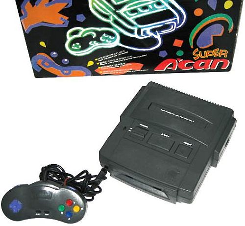
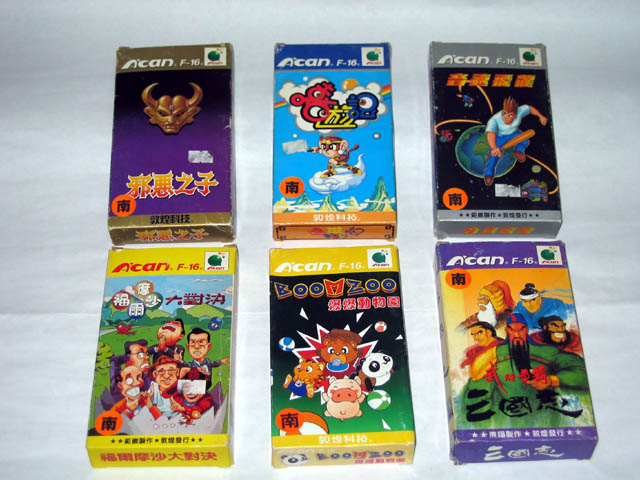

Super A'can - O console mais obscuro da 4º geração
 :::. Por Edi (FZ2D)
:::. Por Edi (FZ2D)
Conhecemos diversos consoles e na 4º geração alguns deles tiveram destaque e foram muito bem aceitos pela mídia. Consoles como Mega Drive, Super NES e PC-Engine foram sucesso em vendas e resultaram na tecnologia empregada na 5º geração. Por outro lado, o Neo Geo tinha um processador poderosíssimo mas não cabia no bolso de qualquer um. Ainda assim foi um dos processadores mais bem aproveitados da história. Existem vários consoles obscuros nesse meio todo, mas um em especial foi o mais obscuro dessa geração e apesar de ser de Taiwan, não era um simples clone. Era um projeto bem original.
Em 1995, Funtech Entertainment Corporation lançou o primeiro sistema de vídeo game original em Taiwan, o Super A’Can. Produzido e vendido exclusivamente em seu país natal, o console e os controles, confeccionados em material plástico fino, tem um aspecto um tanto frágil e tem uma cor cinza escuro.

Este sistema é muitas vezes confundido com um clone do Super Nintendo, devido ao projeto físico e o processador instalado nessa unidade, porém, uma análise mais minuciosa desta raridade revela um quadro diferente.
Aparecendo apenas no final da era 16 bits de enorme sucesso, o Super A'Can utiliza processadores dual Motorola em sua unidade principal. A primeira destas unidades de processamento central foi o Motorola 68000 de 16 bits, que também foi o processador central utilizado no Mega Drive e Neo Geo AES. A Motorola de 8 bits 6502, que estreou originalmente no interior do Nintendo Entertainment System, consistia na segunda CPU. Estes processadores dual garantiam uma paleta de 32.768 cores e foi bastante poderosa em comparação com o resto dos sistemas de 16 bits. Este poder de processamento teria sido uma vantagem significativa para o Super A'Can se este console tivesse sido lançado em 1989, em vez de 1995. A tecnologia de 32 bits já estava sendo utilizado plenamente, dentro do mercado de jogos na época de seu lançamento e o Super A'Can era tecnologicamente obsoleto antes de chegar as prateleiras das lojas.
Foram doze jogos confirmados, com um adicional de nove rumores. Os jogos viam em caixas de papelão que incluíam um suporte de plástico do jogo e manual de instruções, parecido com os cartuchos de SNes da época. Este sistema combinou o design divertido e lúdico de embalagem.
Cores vibrantes são agradavelmente exibidas em ambientes 2D nos jogos do Funtech Super A’Can. Um dos melhores jogos para este sistema é C.U.G., um jogo de Ação/Plataforma em 2D.

O Super A'Can falhou miseravelmente, devido à utilização de tecnologia ultrapassada e que foram inicialmente propostos para venda a um preço exorbitante. Pouquíssimos consoles foram vendidos, e existem relatos que a Funtech Entertainment Corporation perdeu US$ 6 milhões de dólares no empreendimento. Unidades não vendidas foram desmontadas e comercializadas para várias empresas nos EUA e no exterior.
Colecionar este console é uma proposta cara, devido ao número limitado de unidades que foram adquiridas e da exclusividade ao mercado de Taiwan. Prepare-se para investir pesadamente se quiser adquirir esse console. Ele custa de 100 à 150 USD para um console loose, mais 250 USD completo em caixa. Infelizmente, os jogos são até mais raros que o próprio console. É mais comum encontrar os sistemas Super A'Can e os jogos no comercio de Taiwan.
Globalmente, o Super A'Can é um console muito raro unicamente devido a seu fracasso na indústria do vídeo game. Não há nada de extraordinário sobre o sistema ou na biblioteca de jogos para ele. Apenas colecionadores devem realizar a compra do Super A'Can. O próprio sistema não garante o alto investimento pelo jogador casual, mas jogos como Sango Fighter, C.U.G., Speedy Dragon e Boom Zoo, parecem ser as boas pedidas para esse console. Eu teria um com certeza contanto que tivesse esses cartuchos em mãos.
Vamos dar uma conferida agora em sua pequena biblioteca:
ID |
Título Original |
Título Alternativo |
Desenvolvedor |
Genero |
F-001 |
Fu Er Mo Sha Da Dui Jue |
Formosa Duel |
Ju Wei Technology |
Puzzle |
F-002 |
San Guo Zhi |
Sango Fighter |
Panda Software |
Luta |
F-003 |
Xie E Zhi Zi |
Son of Evil |
Dunhuang Technology |
RPG |
F-004 |
Yin Su Fei Long |
Speedy Dragon |
Ju Wei Technology |
Ação/Plataforma |
F-005 |
Chao Ji Zhong Hua Zhi Bang Lian Meng |
Super China Baseball League |
Quan Wei Technology |
Esporte/Baseball |
F-006 |
Xi You Jie |
C.U.G. |
Dunhuang Technology |
Ação/Plataforma |
F-007 |
Chao Ji Guang Ming Zhan Shi |
Super Brilliant Battle Chronicle |
Jing Xun Information |
RPG/Estratégia |
F-008 |
Fei Zhou Tan Xian |
African Safari |
Panda Software |
Monopoly |
F-009 |
Du Ba |
Gambling Lord |
Panda Software |
|
F-010 |
Mo Bang Zhuang Qiu |
Magic Wand Pool |
Dunhuang Technology |
Esporte/Sinuca |
F-011 |
Bao Bao Dong Wu Yuan |
Boom Zoo |
Dunhuang Technology |
Maze |
F-012 |
Rebel Star |
Shooter |
Essa é a biblioteca de jogos do super A’Can. Alguns jogos são um pouco mais conhecidos e outros , como por exemplo F-012, extremamente obscuros.
Boom Zoo, por exemplo, é um clone de Bomberman, o que sem dúvida alguma, faz dele um bom título devido a sua proposta. Você joga com animaizinhos e o jogo é ambientado em um zoológico. Sango Fighter é um jogo de luta em 2D onde os personagens principais representam antigos imperadores e guerreiros chineses. Esse título é na verdade um port da versão lançada para MS-DOS um ano antes.
Rebel Star, o mais raro jogo do Super A’Can tinha potencial. Ele é um misto de Soul Star com After Burner e traz vários efeitos visuais como rotação, zoom e tudo que o processador do Super A’Can pode fornecer.
Speedy Dragon é um clone de Sonic, onde você controla um personagem de cabelo arrepiado segurando um taco. O jogo mostra loopings e tem bastante velocidade, assim como Sonic, mas o jogo mais original do console é C.U.G., em que você controla o lendário macaquinho com uma nuvem voadora dourada e um bastão mágico.
Todos os seus títulos mostram cores bem vivas e uma boa média de ação. Esse console é um intermédio entre o Mega Drive e Super NES, porém, mais equilibrado que os dois citados, pois ele possuía uma boa paleta de cores e uma velocidade de processamento razoável, isso é, a paleta de cores é maior que a do Mega Drive e a velocidade de processamento bem superior a do Super NES.
Na época de seu lançamento foi publicada uma revista que falava sobre as diferenças entre seus concorrentes, o Mega Drive e o Super Nes.
- Processador principal: Motorola 68000 @ 10.6Mhz
-
Processador auxiliar: Motorola 6502 @ 3.58Mhz
-
RAM do sistema principal: 64KByte
-
RAM do sistema auxiliar: 32KByte
-
Chips personalizados UMC:* UM6618 – Processador de animação de backgrounds* UM6619 – Processador de música, áudio e processador de periféricos
-
VRAM: 128KByte
-
Cores: 256 simultaneas na tela de uma paleta de of 32,678 cores
-
Resolução: 320x240
-
Até 4 camadas de fundo
-
Sprites:
* 40/line
* 320/frame
* Tamanho máximo: 256x256
* Cores: 256 ou 16 -
Efeitos gráficos: Zoom, rotação, mosaico, transparencia, perspectiva, distorção, mistura de cores, etc.
-
Som: 16 canais de áudio, Stereo PCM
-
Tamanho máximo dos cartuchos: 112MB
-
Memória SRAM dos cartuchos: 16 para 64 KB
-
Suporte externo para aceleração gráfica
Como podemos ver em suas especificações técnicas, o console tem um bom hardware mas infelizmente careceu de suporte e acabou não sendo bem utilizado. O console também não sobreviveu o suficiente para que seu processador tivesse uma boa utilização.
Imaginem o Funtech Super A’Can com um suporte da Capcom, Hudson Soft e outras gigantes desenvolvedoras. Um dos problemas do Super A’Can é que a Funtech tentou inicia-lo com um baixo suporte de pequenos desenvolvedores chineses além de seu alto custo de aquisição na época.
O Super A’Can possuía uma porta de expansão lateral que provavelmente utilizaria um periférico para suportar jogos em CD-ROM, mas infelizmente esse add-on jamais chegou a ser lançado.
Se a maioria acha que nunca irá usufruir dos jogos do Super A’Can esta muito enganado. A emulação desse sistema está em constante desenvolvimento e o emulador utilizado é o MESS, Multiple Emulator Super System. Veja abaixo como é simples utilizar esse emulador.
No diretório do MESS existe uma pasta chamada Software. Crie uma pasta com o nome SUPERACAN e dentro dessa pasta coloque as ROMs. Abra o aplicativo messui.exe e depois em file, audit all systems. Agora você já está pronto para emular o Super A’Can. Procure pelo nome em system e do lado direito haverá uma tabela com as ROMs para você escolher.
Veja abaixo algumas screeshots dos jogos emulados com MESS:
Se você acha que será um problema encontrar ROMs do Funtech Super A’Can, saiba que não é, pois no Fórum SEGA Forever existe um pacote com 10 ROMs disponíveis desse sistema. Vale salientar que o MESS está em constante atualização e se ocorrer alguns bugs nos jogos não tem problema, de pouco em pouco o sistema terá uma compatibilidade de alto nível com os jogos.
Espero que a tradução que eu fiz tenha uma boa coerência e que seja de fácil compreensão. Eu utilizei como referências o fan site Emu Go, Ultimate Console Database e The Vídeo Game Console Library. Algumas figuras também foram extraídas desses locais.
Tenho certeza de que todos gostaram dessa matéria e de conhecer o console mais obscuro da 4º geração e toda a sua história. Espero que logo o MESS tenha um alto avanço para que eu possa fazer um review de C.U.G., Boom Zoo ou até Speedy Dragon.
Acesse o Trombone e comente sobre essa matéria!


O projeto do PC-FX foi incomum para consoles na época, pois fica na posição vertical como uma torre de computador, enquanto outros consoles contemporâneos costumavam ser planos.
Lançamento do Neo Geo
Conhecido como o console mais caro de todos os tempos, o Neo Geo era a versão caseira da placa de arcade MVS. Internamente, ele possuia um arranjo dos processadores semelhante ao do Mega Drive
Ninja Gaiden para Mega Drive
Em 90/91 mais ou menos, a Sega ganhou da Tecmo a oportunidade de fazer umas versões do Ninja Gaiden para os seus consoles. Essa chance é comparável ao que Deus fez quando deu o mundo para Adão.